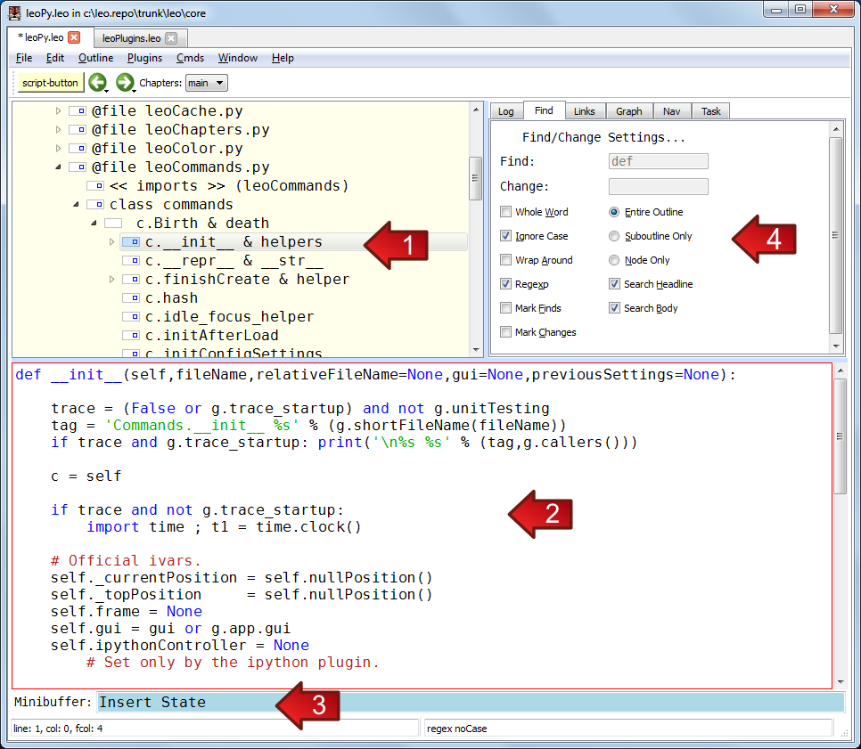
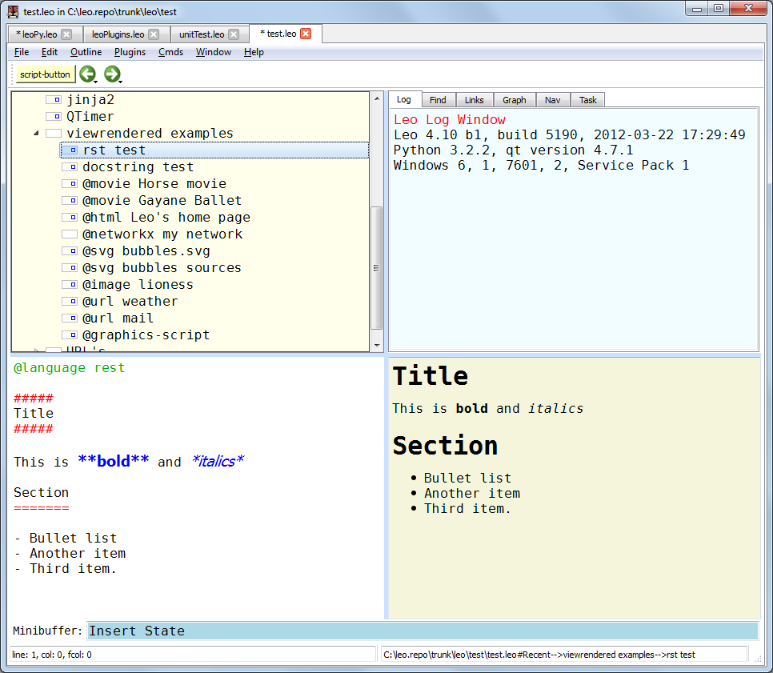
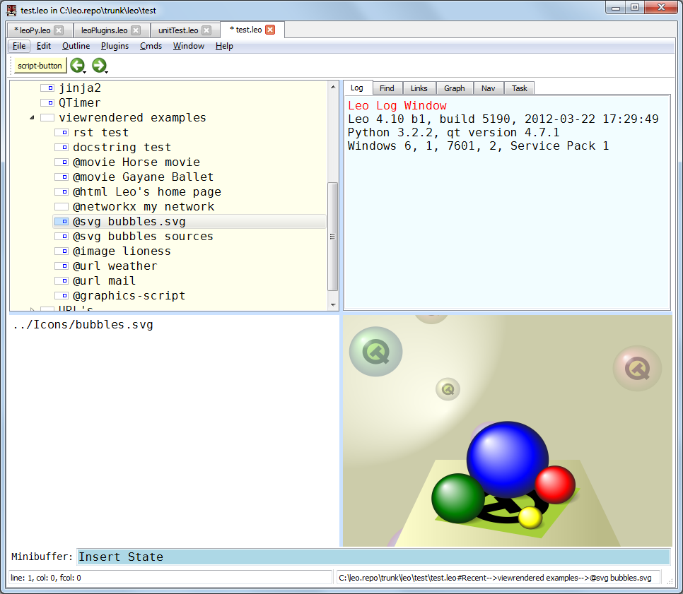

Leo screen shots¶
Windows screen shots¶
Here is Leo’s main window on Windows 7 showing the outline pane (1), the body pane (2), the minibuffer (3), the log pane, showing the find tab (4).
The body pane shows the contents of the presently selected node in the outline pane.

The following screenshots show Leo’s rendering pane. It can render reStructuredText:

The rendering pane can render svg pictures, including animated pictures. Here we see an .svg file included by reference:

The rendering pane can also render svg sources contained in the body pane:

The rendering pane can show pictures, music and movies. Here we see Leo’s splash screen: